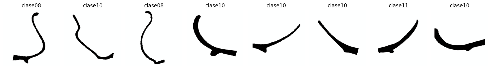
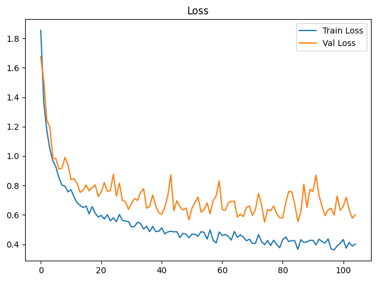
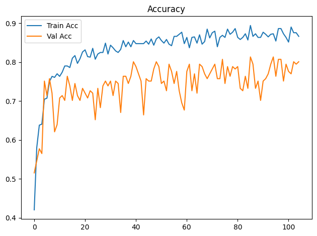
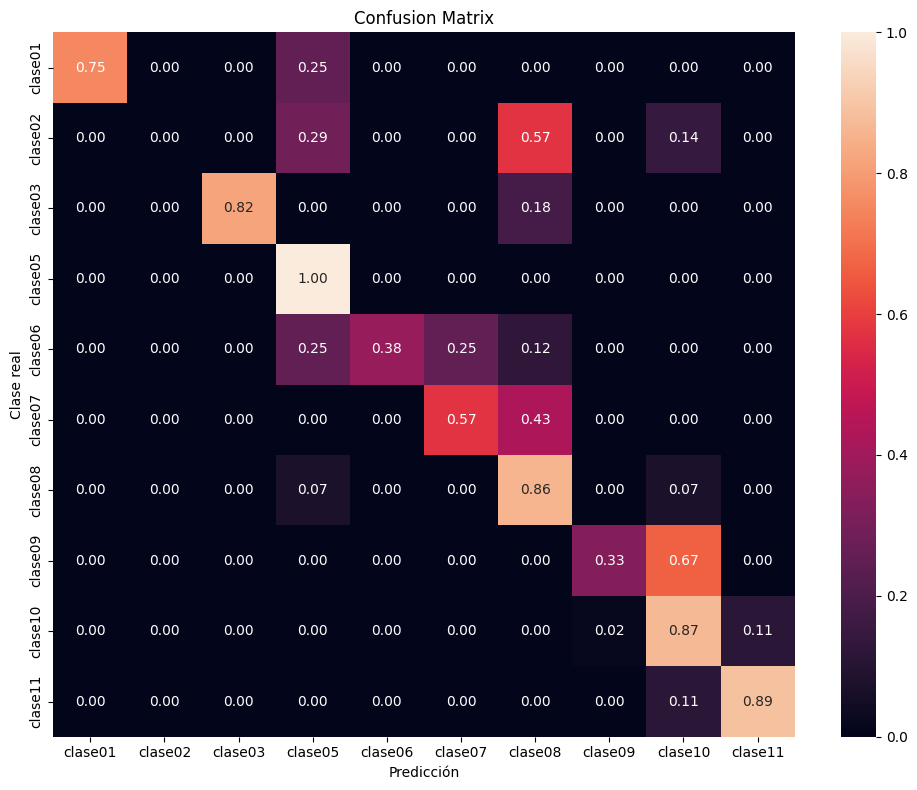

Dispositivo utilizado para procesamiento: CUDA - NVIDIA GeForce GTX 1650Entrenamiento de CNN ResNet-18 con Transfer Learning
Objetivos
- Construir un modelo baseline de clasificación mediante transfer learning con ResNet18 preentrenada.
- Entrenar inicialmente solo la capa clasificadora y descongelar
layer4enUNFREEZE_EPOCHcon una tasa de aprendizaje menor. - Aplicar transformaciones y aumentación de datos al conjunto de entrenamiento.
- Entrenar y validar el modelo registrando loss y accuracy por época.
- Detener el entrenamiento si val_loss no mejora suficientemente durante la paciencia configurada.
- Evaluar el modelo de la mejor época de validación sobre el conjunto de prueba.
- Analizar los resultados mediante accuracy, precision, recall, F1-score, reporte de clasificación y matriz de confusión normalizada.
- Guardar los pesos restaurados de la mejor época de validación (o los finales si se desactiva la parada anticipada).
Dispositivo para procesamiento
División de datos
La pertenencia de cada imagen a train, val o test se lee de la metadata generada por el notebook de división. La relación se realiza mediante ruta_relativa; por tanto, el split no se recalcula aunque cambien la semilla o los parámetros del entrenamiento.
Dataset seleccionado: completos
Directorio de datos: /home/rafael/Dev/vasijas/data/10.cuadrados_divididos_en_train_val_y_test
Metadata de split: data/10.cuadrados_divididos_en_train_val_y_test/metadata.csv
Clases: clase01 clase02 clase03 clase05 clase06 clase07 clase08 clase09 clase10 clase11
Split persistido -> train: 749, val: 161, test: 161
Epoch 1/300
Train Loss: 1.8545 | Train Acc: 0.4206 | Val Loss: 1.6739 | Val Acc: 0.5155
Tiempo de epoch: 0:00:09.701889
Epoch 2/300
Train Loss: 1.3618 | Train Acc: 0.5808 | Val Loss: 1.5080 | Val Acc: 0.5466
Tiempo de epoch: 0:00:06.045048
Epoch 3/300
Train Loss: 1.1740 | Train Acc: 0.6382 | Val Loss: 1.2428 | Val Acc: 0.5776
Tiempo de epoch: 0:00:06.000340
Epoch 4/300
Train Loss: 1.0468 | Train Acc: 0.6409 | Val Loss: 1.1970 | Val Acc: 0.5652
Tiempo de epoch: 0:00:05.815636
Epoch 5/300
Train Loss: 0.9662 | Train Acc: 0.7049 | Val Loss: 0.9857 | Val Acc: 0.7516
Tiempo de epoch: 0:00:05.788368
Epoch 6/300
Train Loss: 0.9259 | Train Acc: 0.7076 | Val Loss: 0.9819 | Val Acc: 0.7143
Tiempo de epoch: 0:00:05.746197
Epoch 7/300
Train Loss: 0.8525 | Train Acc: 0.7503 | Val Loss: 0.9107 | Val Acc: 0.7578
Tiempo de epoch: 0:00:05.853162
Epoch 8/300
Train Loss: 0.8015 | Train Acc: 0.7637 | Val Loss: 0.9170 | Val Acc: 0.7205
Tiempo de epoch: 0:00:05.798494
Epoch 9/300
Train Loss: 0.7952 | Train Acc: 0.7610 | Val Loss: 0.9899 | Val Acc: 0.6211
Tiempo de epoch: 0:00:05.981673
Epoch 10/300
Train Loss: 0.7564 | Train Acc: 0.7704 | Val Loss: 0.9415 | Val Acc: 0.6398
Tiempo de epoch: 0:00:05.712936
Epoch 11/300
Train Loss: 0.7707 | Train Acc: 0.7637 | Val Loss: 0.8406 | Val Acc: 0.7081
Tiempo de epoch: 0:00:05.886862
Epoch 12/300
Train Loss: 0.7213 | Train Acc: 0.7744 | Val Loss: 0.8457 | Val Acc: 0.7143
Tiempo de epoch: 0:00:05.876786
Epoch 13/300
Train Loss: 0.6822 | Train Acc: 0.7904 | Val Loss: 0.8165 | Val Acc: 0.7019
Tiempo de epoch: 0:00:06.125398
Epoch 14/300
Train Loss: 0.6645 | Train Acc: 0.7904 | Val Loss: 0.7526 | Val Acc: 0.7640
Tiempo de epoch: 0:00:05.766262
Epoch 15/300
Train Loss: 0.6501 | Train Acc: 0.7864 | Val Loss: 0.7670 | Val Acc: 0.7391
Tiempo de epoch: 0:00:05.756549
Epoch 16/300
Train Loss: 0.6598 | Train Acc: 0.8104 | Val Loss: 0.8026 | Val Acc: 0.7019
Tiempo de epoch: 0:00:05.825077
Epoch 17/300
Train Loss: 0.6065 | Train Acc: 0.8171 | Val Loss: 0.7633 | Val Acc: 0.7453
Tiempo de epoch: 0:00:05.821161
Epoch 18/300
Train Loss: 0.6562 | Train Acc: 0.7971 | Val Loss: 0.7868 | Val Acc: 0.7143
Tiempo de epoch: 0:00:05.729794
Epoch 19/300
Train Loss: 0.6105 | Train Acc: 0.8091 | Val Loss: 0.8039 | Val Acc: 0.7019
Tiempo de epoch: 0:00:05.806902
Epoch 20/300
Train Loss: 0.5847 | Train Acc: 0.8264 | Val Loss: 0.7245 | Val Acc: 0.7329
Tiempo de epoch: 0:00:05.657915
Epoch 21/300
Train Loss: 0.5963 | Train Acc: 0.8318 | Val Loss: 0.7569 | Val Acc: 0.7205
Tiempo de epoch: 0:00:06.166467
Epoch 22/300
Train Loss: 0.5710 | Train Acc: 0.8144 | Val Loss: 0.8196 | Val Acc: 0.7081
Tiempo de epoch: 0:00:05.841294
Epoch 23/300
Train Loss: 0.6010 | Train Acc: 0.8131 | Val Loss: 0.7603 | Val Acc: 0.7267
Tiempo de epoch: 0:00:05.668844
Epoch 24/300
Train Loss: 0.5596 | Train Acc: 0.8358 | Val Loss: 0.7640 | Val Acc: 0.7205
Tiempo de epoch: 0:00:05.886529
Epoch 25/300
Train Loss: 0.5792 | Train Acc: 0.8077 | Val Loss: 0.8755 | Val Acc: 0.6522
Tiempo de epoch: 0:00:05.783729
Epoch 26/300
Train Loss: 0.5538 | Train Acc: 0.8211 | Val Loss: 0.7270 | Val Acc: 0.7329
Tiempo de epoch: 0:00:05.946929
Epoch 27/300
Train Loss: 0.6025 | Train Acc: 0.8251 | Val Loss: 0.8155 | Val Acc: 0.6832
Tiempo de epoch: 0:00:05.810880
Epoch 28/300
Train Loss: 0.5627 | Train Acc: 0.8251 | Val Loss: 0.6973 | Val Acc: 0.7391
Tiempo de epoch: 0:00:05.652410
Epoch 29/300
Train Loss: 0.5576 | Train Acc: 0.8491 | Val Loss: 0.6884 | Val Acc: 0.7516
Tiempo de epoch: 0:00:05.823725
Epoch 30/300
Train Loss: 0.5538 | Train Acc: 0.8211 | Val Loss: 0.6373 | Val Acc: 0.7391
Tiempo de epoch: 0:00:06.278560
Epoch 31/300
Train Loss: 0.5177 | Train Acc: 0.8438 | Val Loss: 0.6778 | Val Acc: 0.7516
Tiempo de epoch: 0:00:05.793532
Epoch 32/300
Train Loss: 0.5213 | Train Acc: 0.8371 | Val Loss: 0.7107 | Val Acc: 0.7143
Tiempo de epoch: 0:00:05.680609
Epoch 33/300
Train Loss: 0.5506 | Train Acc: 0.8291 | Val Loss: 0.6980 | Val Acc: 0.7516
Tiempo de epoch: 0:00:05.810543
Epoch 34/300
Train Loss: 0.5399 | Train Acc: 0.8251 | Val Loss: 0.7518 | Val Acc: 0.7453
Tiempo de epoch: 0:00:05.921556
Epoch 35/300
Train Loss: 0.5035 | Train Acc: 0.8331 | Val Loss: 0.7783 | Val Acc: 0.6708
Tiempo de epoch: 0:00:05.908766
Epoch 36/300
Train Loss: 0.5219 | Train Acc: 0.8558 | Val Loss: 0.6451 | Val Acc: 0.7640
Tiempo de epoch: 0:00:05.713923
Epoch 37/300
Train Loss: 0.4856 | Train Acc: 0.8398 | Val Loss: 0.6563 | Val Acc: 0.7640
Tiempo de epoch: 0:00:05.757029
Epoch 38/300
Train Loss: 0.5212 | Train Acc: 0.8518 | Val Loss: 0.7350 | Val Acc: 0.7453
Tiempo de epoch: 0:00:05.739325
Epoch 39/300
Train Loss: 0.4866 | Train Acc: 0.8398 | Val Loss: 0.6622 | Val Acc: 0.7640
Tiempo de epoch: 0:00:05.861597
Epoch 40/300
Train Loss: 0.4872 | Train Acc: 0.8558 | Val Loss: 0.6138 | Val Acc: 0.8012
Tiempo de epoch: 0:00:05.749629
Epoch 41/300
Train Loss: 0.5119 | Train Acc: 0.8478 | Val Loss: 0.6045 | Val Acc: 0.7888
Tiempo de epoch: 0:00:05.712262
Epoch 42/300
Train Loss: 0.4708 | Train Acc: 0.8478 | Val Loss: 0.6497 | Val Acc: 0.7702
Tiempo de epoch: 0:00:05.889204
Epoch 43/300
Train Loss: 0.4840 | Train Acc: 0.8478 | Val Loss: 0.7302 | Val Acc: 0.7516
Tiempo de epoch: 0:00:05.873882
Epoch 44/300
Train Loss: 0.4877 | Train Acc: 0.8478 | Val Loss: 0.8730 | Val Acc: 0.6646
Tiempo de epoch: 0:00:05.761920
Epoch 45/300
Train Loss: 0.4847 | Train Acc: 0.8545 | Val Loss: 0.6275 | Val Acc: 0.7578
Tiempo de epoch: 0:00:05.893584
Epoch 46/300
Train Loss: 0.4852 | Train Acc: 0.8465 | Val Loss: 0.6956 | Val Acc: 0.7516
Tiempo de epoch: 0:00:05.824850
Epoch 47/300
Train Loss: 0.4453 | Train Acc: 0.8598 | Val Loss: 0.6559 | Val Acc: 0.7516
Tiempo de epoch: 0:00:05.743670
Epoch 48/300
Train Loss: 0.4740 | Train Acc: 0.8438 | Val Loss: 0.6338 | Val Acc: 0.7826
Tiempo de epoch: 0:00:05.858707
Epoch 49/300
Train Loss: 0.4690 | Train Acc: 0.8598 | Val Loss: 0.6454 | Val Acc: 0.8012
Tiempo de epoch: 0:00:05.756554
Epoch 50/300
Train Loss: 0.4437 | Train Acc: 0.8652 | Val Loss: 0.5658 | Val Acc: 0.7888
Tiempo de epoch: 0:00:05.680348
Epoch 51/300
Train Loss: 0.4688 | Train Acc: 0.8558 | Val Loss: 0.6453 | Val Acc: 0.7453
Tiempo de epoch: 0:00:05.755678
Epoch 52/300
Train Loss: 0.4678 | Train Acc: 0.8491 | Val Loss: 0.6831 | Val Acc: 0.7516
Tiempo de epoch: 0:00:05.727031
Epoch 53/300
Train Loss: 0.4543 | Train Acc: 0.8585 | Val Loss: 0.7214 | Val Acc: 0.7267
Tiempo de epoch: 0:00:05.684973
Epoch 54/300
Train Loss: 0.4854 | Train Acc: 0.8465 | Val Loss: 0.6184 | Val Acc: 0.7950
Tiempo de epoch: 0:00:06.207012
Epoch 55/300
Train Loss: 0.4804 | Train Acc: 0.8425 | Val Loss: 0.6357 | Val Acc: 0.7764
Tiempo de epoch: 0:00:05.937564
Epoch 56/300
Train Loss: 0.4357 | Train Acc: 0.8665 | Val Loss: 0.6810 | Val Acc: 0.7453
Tiempo de epoch: 0:00:05.822686
Epoch 57/300
Train Loss: 0.4972 | Train Acc: 0.8665 | Val Loss: 0.6066 | Val Acc: 0.7764
Tiempo de epoch: 0:00:05.807207
Epoch 58/300
Train Loss: 0.4257 | Train Acc: 0.8718 | Val Loss: 0.6965 | Val Acc: 0.7267
Tiempo de epoch: 0:00:05.766760
Epoch 59/300
Train Loss: 0.4092 | Train Acc: 0.8772 | Val Loss: 0.7285 | Val Acc: 0.6957
Tiempo de epoch: 0:00:05.746318
Epoch 60/300
Train Loss: 0.4830 | Train Acc: 0.8478 | Val Loss: 0.8312 | Val Acc: 0.6770
Tiempo de epoch: 0:00:05.721862
Epoch 61/300
Train Loss: 0.4593 | Train Acc: 0.8638 | Val Loss: 0.6367 | Val Acc: 0.7764
Tiempo de epoch: 0:00:05.787399
Epoch 62/300
Train Loss: 0.4662 | Train Acc: 0.8371 | Val Loss: 0.6299 | Val Acc: 0.7950
Tiempo de epoch: 0:00:05.772395
Epoch 63/300
Train Loss: 0.4546 | Train Acc: 0.8638 | Val Loss: 0.6804 | Val Acc: 0.7267
Tiempo de epoch: 0:00:05.778087
Epoch 64/300
Train Loss: 0.4284 | Train Acc: 0.8652 | Val Loss: 0.6933 | Val Acc: 0.7702
Tiempo de epoch: 0:00:05.880619
Epoch 65/300
Train Loss: 0.4867 | Train Acc: 0.8491 | Val Loss: 0.6918 | Val Acc: 0.7205
Tiempo de epoch: 0:00:05.885133
Epoch 66/300
Train Loss: 0.4470 | Train Acc: 0.8705 | Val Loss: 0.5856 | Val Acc: 0.7950
Tiempo de epoch: 0:00:05.788733
Epoch 67/300
Train Loss: 0.4635 | Train Acc: 0.8465 | Val Loss: 0.6040 | Val Acc: 0.7888
Tiempo de epoch: 0:00:05.764389
Epoch 68/300
Train Loss: 0.4484 | Train Acc: 0.8531 | Val Loss: 0.5884 | Val Acc: 0.7702
Tiempo de epoch: 0:00:05.687621
Epoch 69/300
Train Loss: 0.4234 | Train Acc: 0.8852 | Val Loss: 0.6508 | Val Acc: 0.7578
Tiempo de epoch: 0:00:05.747038
Epoch 70/300
Train Loss: 0.4346 | Train Acc: 0.8625 | Val Loss: 0.6594 | Val Acc: 0.7702
Tiempo de epoch: 0:00:05.776437
Epoch 71/300
Train Loss: 0.4051 | Train Acc: 0.8758 | Val Loss: 0.5942 | Val Acc: 0.7826
Tiempo de epoch: 0:00:06.003597
Epoch 72/300
Train Loss: 0.4070 | Train Acc: 0.8798 | Val Loss: 0.6375 | Val Acc: 0.7950
Tiempo de epoch: 0:00:05.796081
Epoch 73/300
Train Loss: 0.4655 | Train Acc: 0.8398 | Val Loss: 0.7461 | Val Acc: 0.7578
Tiempo de epoch: 0:00:06.004236
Epoch 74/300
Train Loss: 0.4196 | Train Acc: 0.8638 | Val Loss: 0.6691 | Val Acc: 0.7578
Tiempo de epoch: 0:00:05.882160
Epoch 75/300
Train Loss: 0.3968 | Train Acc: 0.8692 | Val Loss: 0.5502 | Val Acc: 0.8075
Tiempo de epoch: 0:00:05.688326
Epoch 76/300
Train Loss: 0.4257 | Train Acc: 0.8638 | Val Loss: 0.6353 | Val Acc: 0.7453
Tiempo de epoch: 0:00:05.941528
Epoch 77/300
Train Loss: 0.3908 | Train Acc: 0.8852 | Val Loss: 0.6273 | Val Acc: 0.7888
Tiempo de epoch: 0:00:06.008419
Epoch 78/300
Train Loss: 0.4277 | Train Acc: 0.8718 | Val Loss: 0.6601 | Val Acc: 0.7640
Tiempo de epoch: 0:00:05.806328
Epoch 79/300
Train Loss: 0.3979 | Train Acc: 0.8772 | Val Loss: 0.6105 | Val Acc: 0.7888
Tiempo de epoch: 0:00:05.906127
Epoch 80/300
Train Loss: 0.3762 | Train Acc: 0.8865 | Val Loss: 0.5798 | Val Acc: 0.7826
Tiempo de epoch: 0:00:05.674826
Epoch 81/300
Train Loss: 0.4318 | Train Acc: 0.8638 | Val Loss: 0.5785 | Val Acc: 0.7888
Tiempo de epoch: 0:00:05.780417
Epoch 82/300
Train Loss: 0.4492 | Train Acc: 0.8585 | Val Loss: 0.6825 | Val Acc: 0.7329
Tiempo de epoch: 0:00:05.809115
Epoch 83/300
Train Loss: 0.4177 | Train Acc: 0.8638 | Val Loss: 0.7591 | Val Acc: 0.7267
Tiempo de epoch: 0:00:05.816597
Epoch 84/300
Train Loss: 0.4256 | Train Acc: 0.8732 | Val Loss: 0.7567 | Val Acc: 0.7640
Tiempo de epoch: 0:00:05.717202
Epoch 85/300
Train Loss: 0.4230 | Train Acc: 0.8571 | Val Loss: 0.6698 | Val Acc: 0.7329
Tiempo de epoch: 0:00:05.907437
Epoch 86/300
Train Loss: 0.3650 | Train Acc: 0.8945 | Val Loss: 0.5541 | Val Acc: 0.8137
Tiempo de epoch: 0:00:05.807644
Epoch 87/300
Train Loss: 0.4313 | Train Acc: 0.8665 | Val Loss: 0.6183 | Val Acc: 0.7950
Tiempo de epoch: 0:00:05.662952
Epoch 88/300
Train Loss: 0.4120 | Train Acc: 0.8732 | Val Loss: 0.8086 | Val Acc: 0.7329
Tiempo de epoch: 0:00:05.785297
Epoch 89/300
Train Loss: 0.4155 | Train Acc: 0.8638 | Val Loss: 0.6510 | Val Acc: 0.7516
Tiempo de epoch: 0:00:05.864707
Epoch 90/300
Train Loss: 0.4266 | Train Acc: 0.8638 | Val Loss: 0.7722 | Val Acc: 0.7019
Tiempo de epoch: 0:00:05.821030
Epoch 91/300
Train Loss: 0.4267 | Train Acc: 0.8772 | Val Loss: 0.7597 | Val Acc: 0.7516
Tiempo de epoch: 0:00:05.934960
Epoch 92/300
Train Loss: 0.3951 | Train Acc: 0.8718 | Val Loss: 0.8691 | Val Acc: 0.7578
Tiempo de epoch: 0:00:05.849510
Epoch 93/300
Train Loss: 0.4340 | Train Acc: 0.8652 | Val Loss: 0.7323 | Val Acc: 0.7702
Tiempo de epoch: 0:00:05.821044
Epoch 94/300
Train Loss: 0.4185 | Train Acc: 0.8718 | Val Loss: 0.6572 | Val Acc: 0.7950
Tiempo de epoch: 0:00:06.015671
Epoch 95/300
Train Loss: 0.4077 | Train Acc: 0.8732 | Val Loss: 0.5947 | Val Acc: 0.8137
Tiempo de epoch: 0:00:05.687973
Epoch 96/300
Train Loss: 0.4368 | Train Acc: 0.8545 | Val Loss: 0.6332 | Val Acc: 0.7640
Tiempo de epoch: 0:00:05.878390
Epoch 97/300
Train Loss: 0.3679 | Train Acc: 0.8865 | Val Loss: 0.6449 | Val Acc: 0.8075
Tiempo de epoch: 0:00:05.923372
Epoch 98/300
Train Loss: 0.3618 | Train Acc: 0.8865 | Val Loss: 0.5980 | Val Acc: 0.8075
Tiempo de epoch: 0:00:05.844333
Epoch 99/300
Train Loss: 0.3880 | Train Acc: 0.8732 | Val Loss: 0.7278 | Val Acc: 0.7516
Tiempo de epoch: 0:00:05.724176
Epoch 100/300
Train Loss: 0.4048 | Train Acc: 0.8638 | Val Loss: 0.6307 | Val Acc: 0.7950
Tiempo de epoch: 0:00:05.809004
Epoch 101/300
Train Loss: 0.4327 | Train Acc: 0.8518 | Val Loss: 0.6555 | Val Acc: 0.7764
Tiempo de epoch: 0:00:05.716495
Epoch 102/300
Train Loss: 0.3737 | Train Acc: 0.8905 | Val Loss: 0.7199 | Val Acc: 0.7702
Tiempo de epoch: 0:00:05.883108
Epoch 103/300
Train Loss: 0.4124 | Train Acc: 0.8758 | Val Loss: 0.6331 | Val Acc: 0.8012
Tiempo de epoch: 0:00:05.800672
Epoch 104/300
Train Loss: 0.3871 | Train Acc: 0.8758 | Val Loss: 0.5774 | Val Acc: 0.7950
Tiempo de epoch: 0:00:05.851090
Epoch 105/300
Train Loss: 0.4015 | Train Acc: 0.8665 | Val Loss: 0.5998 | Val Acc: 0.8012
Tiempo de epoch: 0:00:05.896145
Parada anticipada en epoch 105: 30 épocas sin mejora suficiente de val_loss.
Se restauran los pesos de epoch 75 (val_loss=0.5502).
Tiempo total de entrenamiento: 0:10:15.907985

Test Acc: 0.7826
precision recall f1-score support
clase01 1.00 0.75 0.86 4
clase02 0.00 0.00 0.00 7
clase03 1.00 0.82 0.90 11
clase05 0.50 1.00 0.67 8
clase06 1.00 0.38 0.55 8
clase07 0.67 0.57 0.62 7
clase08 0.78 0.86 0.82 42
clase09 0.50 0.33 0.40 3
clase10 0.85 0.87 0.86 53
clase11 0.73 0.89 0.80 18
accuracy 0.78 161
macro avg 0.70 0.65 0.65 161
weighted avg 0.77 0.78 0.76 161

Modelo guardado en: output/models/model_resnet18_bs32_lr1e-3_base.pth